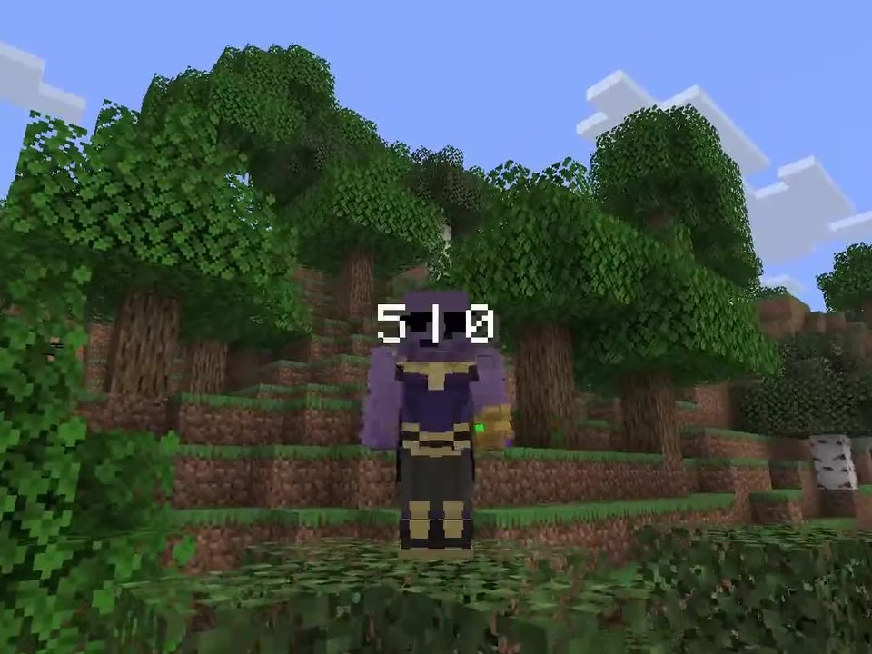
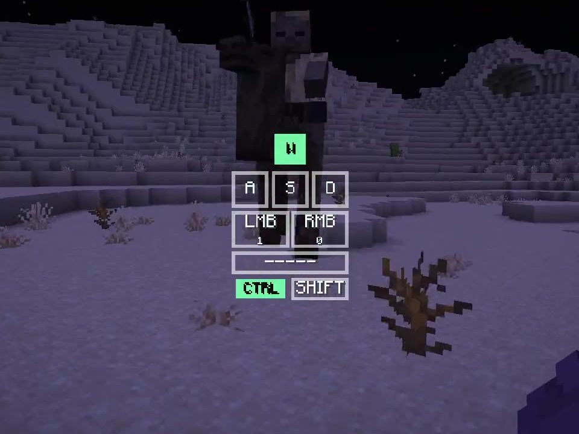
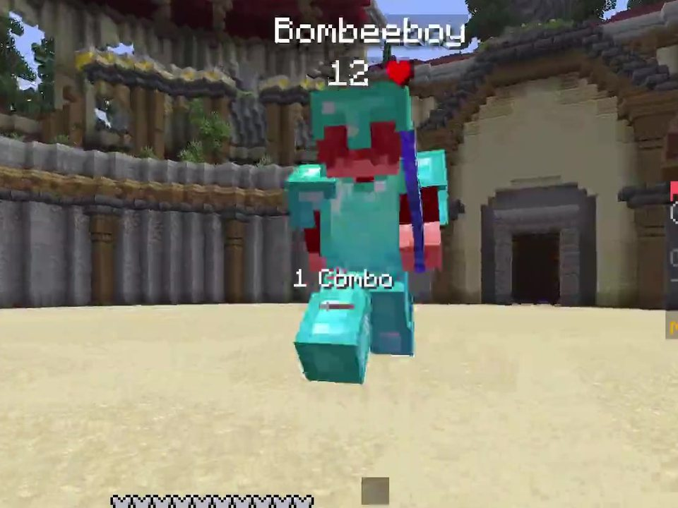
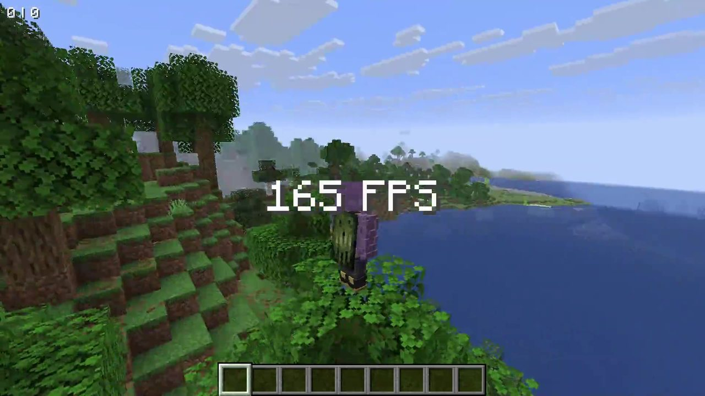
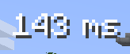

Everything is drawn client-side, placed exactly where you want it, and stored in a single config file you can share as a line of text. Press Right Shift in game to start.
Looking for a specific setting, its default or its range? That is the Full Guide.
Written for 1.2.5
The layout editor
Press Right Shift from anywhere in game to open the editor. Everything you see is the real HUD, live. Modules snap to corners, edges or the center, and when one lines up with another a magenta guide appears and it glides into place rather than jumping.
Input
What it does
Left-click and drag
Move any module, or any individual armor slot, to place it exactly.
Drag empty space
Box-select several modules at once.
←↑→↓
Nudge the selection one pixel at a time.
Hold Shift
Ignore snapping while dragging and place freely.
Scroll wheel
Scale a module, from 50% to 300%.
Right-click a module
Open its own settings context menu, straight from the HUD.
Right-click empty space
Open the global HUD Settings menu: settings, presets, server configs, share codes and a full layout reset.
Keystrokes mid-drag, with the magenta guides showing the edges it has lined up with.
Right-click anywhere that is not a module to open it.
Row
What it does
Prevent Overlap
Keeps modules from being dropped on top of each other, resolving to the nearest free rectangle.
Grid
Left-click to show the grid and snap to it, right-click to cycle 4, 8, 16 and 32 px. Lining up with another module still wins over the grid.
Configs
Save Config, Configs, Server Configs and Export or Import Code. See presets and share codes below.
Reset HUD
Puts every module back to its default position and scale.
Modules
Seven modules ship with the mod. Each one carries its own color, scale, background color and opacity, custom label text and anchor.

0:16
CPS
Counts clicks in the last 1 second window and shows left and right independently. A configurable separator plus free-text prefixes and suffixes let you render 12 | 4, CPS: 12, or anything else you like. Supports rainbow mode and a background.

0:18
Keystrokes
A fully custom keystroke display, not a fixed WASD block. Eleven designs, per-key colors, bold, italic and underlined labels, press animations you stack rather than pick between, and a CPS counter on any key including the mouse buttons. Built in the Keystrokes Designer.

0:12
Combo
A hit-streak counter that counts hits once the server confirms them, and shows a combo landed on you as a negative line. A new tier or a kill freezes the counter for an instant, and beating your saved best combo plays a short BEST moment.
Color it Static, Rainbow or Heatmap, with three preset difficulties or your own tiers. Write the readout with {combo} and {best}, switch the count to Big, and put a timeout bar or your last hits under it. You choose whether the combo breaks on any damage taken, whether it survives switching targets, and how long it lingers before timing out.
Heatmap tiers
Mode
Tier 1
Tier 2
Tier 3, shakes
Easy
3
5
7
Medium (default)
5
8
12
Hard
10
40
60
Custom
Yours (5)
Yours (8)
Yours (12)
Numbers are hits. With Hit Detection on Server, the default, only hits the server confirms are counted. Classic mode counts every one of those; Modern counts only full-strength hits, respecting the 1.9+ attack cooldown so spam clicking does not inflate your streak.
0:13
Reach
The exact distance in blocks of your last successful melee attack, calculated at the moment of the hit and shown to 2 decimal places. Configurable timeout, an optional players-only filter, and an always-show mode with a custom no-hit-yet label instead of disappearing.
0:07
Armor HUD
All 4 armor slots plus main hand and off hand, as item icons with durability bars. Vertical or horizontal, scalable 50 to 300%, hotbar-style slot backgrounds and exact durability numbers. Items react when they lose durability: a shake by default, with sparks, warning corners and a chip on the bar to choose from. A small red ! warns you when one is close to breaking. Slots can be ungrouped and placed one by one, and the editor shows gray placeholders for empty slots so you can place the HUD with nothing equipped.

0:23
FPS
Frames per second, updated every tick. Custom suffix text, color, scale, rainbow mode and background, for when you want the number without opening F3.

Ping
Server latency in milliseconds, read from your own player-list entry: the same value the tab list shows, refreshed whenever the server sends a latency update, roughly once a second on a vanilla server. Custom color, scale and background.
A precision designer for how your keystrokes look, with no external tools. Add any key or mouse button, resize it, drag its label on its own, recolor individual keys, pick from eleven designs, and stack as many press animations as you want on top of any of them.
1:51
Pixel-perfect snapping, context menus, drag and drop, and unlimited undo and redo.
How to use it
1
Open it. Right-click Keystrokes in the HUD editor and choose Open Designer. It is also in the settings menu under Keystrokes → Designer.
2
Drag and drop. Left-click and drag any key to reposition it. Keys snap to their neighbors' edges, and to an even gap between them, then settle into place. If a design is hard to see against the canvas, the BG switch above it cycles the ground between gray, light and dark.
3
Pick a design. DESIGN in the toolbar opens a gallery of all eleven, on screen at once. Each card shows the stock keys in miniature and animates itself, and the one you are using is marked IN USE. Choosing one brings the palette and animation it was drawn with, and Wedge and Hex bring their arrangement too. All of it stays editable.
4
Animate it. ANIM opens the animation drawer. Motions move the key (Squish, Kick, Sink, Nudge) and fills paint it (Ripple, Sweep, Cascade, Hold Ring, Edge Run, Glow). These are checkboxes, not a choice, so several run at once. One direction is shared by every fill, and the release trail has its own switch because it fires on release.
5
Context menu. Right-click a key to rename it, set its keybind, change colors, toggle bold, italic or underline, duplicate or delete it, and to give that one key its own design or animation. Right-click empty space to add new keys or reset the layout.
6
Edit labels. Right-click and drag a key to move its label inside the button; it snaps to the center. Arrow keys nudge the selection pixel by pixel.
7
Share it. EXPORT copies the whole keystrokes look, the key layout plus its design, animation and palette, to the clipboard as a share code. IMPORT reads one back.
8
Undo and redo.CtrlZ undoes and CtrlY redoes. History covers the design, animation and colors as well as the keys, so one undo puts the whole look back.
Every module has a right-click menu in the HUD editor. Besides Reset Position and Reset Settings, each exposes its own rows:
Module
Its own rows
CPS
Enable CPS, Text Color, Scale % 50–300
Keystrokes
Enable Keystrokes, Design (one of 11), Board, Open Designer
Combo
Enable Combo, Always Show, Color Mode, Style (Text or Big), Text Color, Format
Reach
Enable Reach, Always Show, Text Color, No Hit Text
Armor HUD
Enable Armor, Scale %, Vertical, Show Background, Durability Text, Damage Effects, Show Main Hand, Show Off Hand, Ungroup
FPS
Enable FPS, Text Color
Ping
Enable Ping, Scale %, Text Color
Reset Position and Reset Settings are not the same. Reset Position restores the anchor, offsets and scale. Reset Settings restores colors and visual options, but leaves the module's position and whether it is switched on alone.
Ungroup breaks the armor stack apart so each slot can be dragged on its own; right-click a single slot afterwards for Group to snap them back together. Everything above, plus options with no menu row such as backgrounds, rainbow mode, combo timeout and combat mode, is also in the settings screen.
The settings screen
One page per module, split into tabs, with a search box that finds any setting by name, a description and default on every row, and a one-click reset on anything you have changed.
It keeps one readable size at any Minecraft GUI Scale, and you can nudge that baseline from 50% to 200%.
Open it from Mod Menu, from Options → Mods → Eymistaken's HUD → Settings, or by right-clicking empty space in the HUD editor and choosing Settings.
Presets, server configs and share codes
Three ways to keep more than one layout around, all reached by right-clicking empty space in the HUD editor.
Saved configs
Save Config takes a snapshot of your entire HUD, every module's position, scale, colors and settings, stored as plain JSON in simplecps_presets/. Hover Configs to see the list.
Left-click a name to load it
Right-click a name to rename it
Click the bin icon to delete it
Share codes
Export Code packs your whole setup into a single line starting with EYMHUD1- and copies it to your clipboard. Import Code reads one back. The Keystrokes Designer has its own EXPORT and IMPORT for the keystrokes look on its own. Where it sits on your screen is left out on purpose: that corner is yours, not the sender's.
Imports are fully validated before anything is applied. A full-config import saves your current setup as a timestamped backup first; a keystrokes import is a single CtrlZ in the designer.
Codes from other versions still work, and the status line says which version a code came from. Codes from 1.2.2 or earlier have their key numbers translated to 26.3's on the way in. Older builds refuse codes they cannot read in full rather than import half of one.
A code from someone running an addon module you do not have imports fine. Their settings for it ride along untouched, and the reverse holds too.
Server configs
A different HUD per server, with nothing to press. While this is on, whatever your HUD looks like on a server is remembered for it. Join again and it comes back. Single-player worlds share one profile.
Hover Server Configs to see the list; the server you are on is highlighted.
Left-click an entry to use that server's HUD here.
Right-click to give a server a friendlier name than its address.
The on and off switch in the fly-out header turns the feature on or off. It is also in Settings → General.
Auto Backup. Whenever a server config replaces what is on screen, the previous setup is written to a config named Auto Backup. It is a single rolling slot, so only the most recent one is kept.
Appearance
Under Settings → General. It applies to every module at once.
Text outline
Draws a thin black outline on every side of your HUD text instead of the vanilla drop shadow. Much easier to read against bright terrain like snow or sand.
Always the vanilla font. The HUD and the mod's own screens draw in Minecraft's own font. The bundled fonts were removed in 1.2.5 because they rendered blurry at HUD sizes; a config that had one selected simply loads in vanilla.